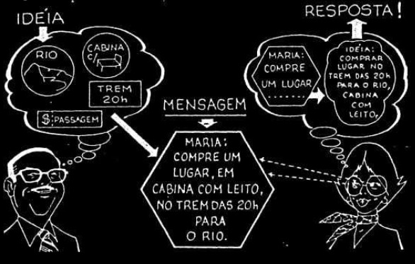
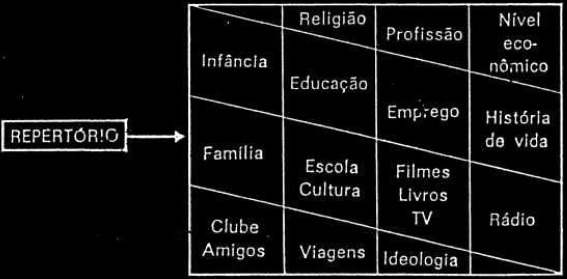

BreveApresentação

GerenteApressado
"Quem não escreve bem... perde o trem!"
A escrita errada do gerente:
"Maria: devo ir ao Rio amanhã sem falta. Quero que você me "rezerve", um lugar, à noite, no trem das 8 para o Rio".
A explicação da secretária:
A escrita correta da secretária:
"Maria: compre, para mim, uma passagem, em cabina com leito, no trem das 20 h de amanhã (4.ª feira), para o Rio de Janeiro."
Se for possível:
"Maria: por favor, providencie, para mim, uma passagem em cabina com leito, no trem das 20 h de amanhã (4ª feira) para o Rio de Janeiro. Muito obrigado."
AlgunsFluxos
Fluxo 01: O básico

Mini explicação aqui
Fluxo 02: Os ruídos

Mini explicação aqui
Fluxo 03: O avançado
Mini explicação aqui
OsCódigos
Código aberto
Código fechado
PontosObservados
Importantes pontos de vista a considerarmos:
Devemos nos preocupar com as respostas produzidas pelos leitores;
Escrever bem é tornar comum aos outros o nosso pensamento;

As três funções básicas da comunicação;
Redução de ruídos na comunicação;
Não basta ser uma boa ideia, tem de ser uma boa mensagem!
ConcluimosQue
"Se pretendemos que a nossa mensagem escrita seja corretamente descodificada, temos de pensar, antes de tudo, na experiência e no grau de conhecimento do destinatário".
Tendo em vista...
